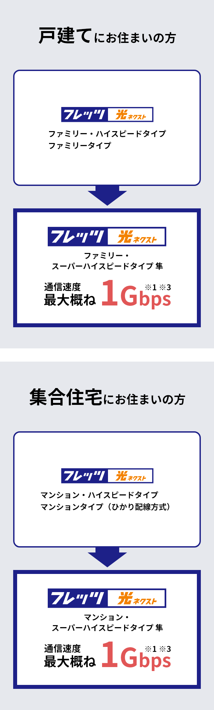

「フレッツ 光クロス」（FTTHアクセスサービス）をご希望の方 開く
「フレッツ 光クロス」をご利用される方はこちらからお申し込みください。
- 「フレッツ 光クロス」
- サービスにお申し込み
「フレッツ 光ネクスト」「フレッツ 光ライト」（いずれもFTTHアクセスサービス）をご利用中の方 開く

変更可能なプランを調べる
以下のプランに変更が可能です。
以下のプランに変更が可能です。
以下のプランに変更が可能です。
以下のプランに変更が可能です。
以下のプランに変更が可能です。
ご利用中のサービスは、インターネットでのプラン変更がお申し込みいただけません。
恐れ入りますが、以下のお問い合わせフォームよりご希望の内容を入力ください。
後日、担当者よりご連絡いたします。
ご利用中のサービスは、インターネットでのプラン変更がお申し込みいただけません。
恐れ入りますが、以下のお問い合わせフォームよりご希望の内容を入力ください。
後日、担当者よりご連絡いたします。
以下のプランに変更が可能です。
-
- 技術規格上の最大値であり、実効速度ではありません。
- 利用環境・状況等によっては数Mbpsになる場合があります。
- 詳細はこちらをご確認ください。
設定・トラブル解決（インターネットが遅い）
- NTT西日本収容ビルからお客さま宅までは、最大概ね1Gbpsの光回線で接続し、複数のお客さまで共有しています。
- 通信速度最大概ね1Gbpsタイプに変更されても、端末、LANケーブル、その他の利用環境・状況等により、実効速度が向上しない場合があります。
- 「フレッツ 光ネクスト マンション・スーパーハイスピードタイプ 隼／フレッツ 光ネクスト マンション・ハイスピードタイプ／フレッツ 光ネクスト マンションタイプ」は、マンションなど集合住宅や複合ビルにお住まいの方向けのサービスです。
1本の光ファイバーを複数のお客さまで利用するタイプです。 - 「フレッツ 光ライト」は、2023年3月31日に新規申込受付を終了いたしました。また、2025年3月31日をもってサービス提供を終了いたします。
「フレッツ・ADSL」（DSLアクセスサービス）または「フレッツ・ISDN」（インターネット関連サービス（IP電話を除く））をご利用の方 開く
「フレッツ・ADSL」または「フレッツ・ISDN」から「フレッツ 光ネクスト スーパーハイスピードタイプ 隼」などへのプラン変更のお申し込みを承ります。